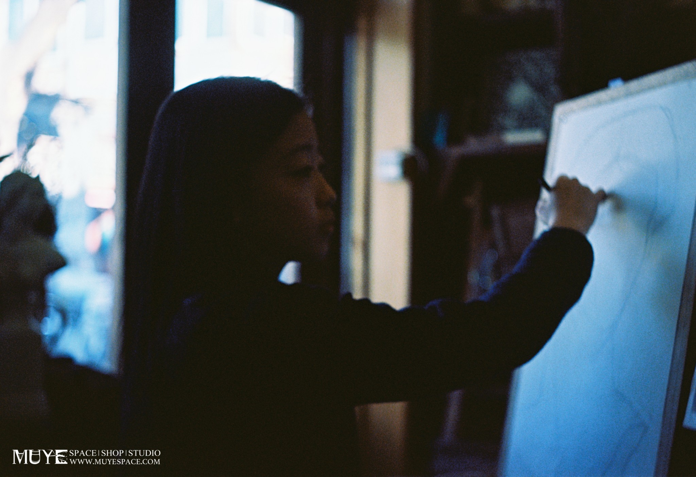
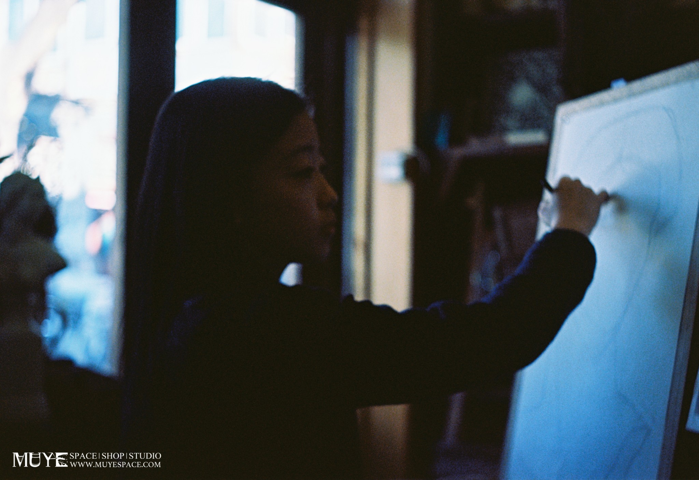

睦野空间
睦野空间隶属于北京鼎盛飞鸿文化传媒有限公司，是由睦野团队独立运营的开放艺术空间。与城郊边缘为特定目的而建造的艺术区商业导向的画廊不同，睦野扎根胡同，由一座胡同杂院的老北房改造而成，与工作室相邻。定期展示由我们策划的不同主题的艺术项目或装置，也为各国年轻艺术家举办展览，跨界工作坊，独立电影放映等。
我们试图通过与各领域的文化实践者（他们有年轻艺术家，设计师，摄影师，人类学研究员，居住在胡同里的大爷）协作探索，共同创造出有趣的艺术项目和事件。让这个胡同里的小空间延伸出无限可能，回归并融入胡同居民的生活，让观者参与到我们的实践中，真正产生互动和交流。
MUYE Space is an independent art space located in a small , ancient yet modern hutong in Beijing. The Space, together with its adjacency, MUYE Studio, are reclaimed from old hutong houses. We host exhibitions, installations and other projects from time to time. We intend to promote collaborative exploration and experimentation with cultural practitioners including local and international young artists, designers, anthropologists, as well as the neighbors living nearby.
Our mission is simply to create infinite possibilities in the limited space, in which the experiments of artists can merge into the everyday experience of the surrounding area, and form interaction and communication with its neighborhood.
 



睦野绘画工作室
睦野绘画工作室成立于2010年，是为艺术爱好者提供专业美术教学的画室，是北京最早的非考学、兴趣与专业并重的画室之一。睦野的精神是‘和睦自由’，我们所提倡的绘画学习不是冰冷机械，是挥洒写意的。睦野既教授传统绘画技法，也鼓励自由创作。我们鼓励同学踏实学习技法，把个人视角与技术表达完美结合，自由创作，把白日梦变现。睦野的课程包括：基础素描、综合色彩、传统油画、国画工笔等
睦野手艺工作坊属于绘画工作室的一部分，其活动不同于绘画工作室的常规课程，更具休闲性。我们每周都会在这里组织不同主题的手艺课程：皮雕，蓝染，湿拓羊毛毡，摄影，花艺，思维导图等。同学通过参与工作坊既可以学习传统手工艺，还可以通过动手制作丰富生活。
空间陈设方面，睦野并不仅仅是一间可以画画的屋子而已。除了充足的光线、舒服的氛围和专业的工具，我们还试图把睦野打造成百科全书般琳琅满目的 ‘珍奇屋’（Cabinet Of curiosity），充满维多利亚和文艺复兴遗风，不同于当代常见‘白房子’工作室的冰冷机械。我们希望通过特别的空间陈设使同学们置身其中，完全沉浸在线条、颜色的世界里，激起无限创作欲望或的灵感。
睦野的学员
睦野的学员构成十分多元。他们来自不同的年龄层（15-75岁之间）、不同行业：投行高管、退休阿姨、骨科医生、工程师、策展人、诗人、律师、数学老师、幼教、国家队运动员、花艺、舞蹈、房地产… 工作领域虽有不同，‘对绘画纯粹的、执着的热爱’却是他们共同具备的特点。绘画作为‘严肃而美好’的业余爱好，让他们在睦野相聚，变成了忘年交、挚友、甚至伴侣。自2010年睦野成立以来，已经有累计超过2000名学员在这里学习绘画。
同学语录
“越来越明白，画画之于我是个玩不完，玩不腻的游戏，这个天空为什么会这么花哨这么生硬呢？因为这是我画的，我说了算。为什么涂得这么厚呢？这符合我的个性。画画就是这么任性的游戏。为了保持这种任性，这种爱好，我不会把这件事作为我的职业。”－今歌
“你要是真的喜欢一样东西就不要把它当职业。所以我就学了金融贸易，把美术作为最纯粹的爱珍藏起来。”－Mo
“《局部》里陈丹青老师很直接地指出，现在的社会可以说已经不需要绘画了。而事实上也是这样，真的是不需要了，电脑数位板图像软件什么做不了？正因为这样，我才会决定把画画当成一辈子可以做的事去做。一件事，终于可以和现在社会撇开关系，多么不容易。”－李朋远

A painting lives its life like a living being, experiencing changes everyday life imposes